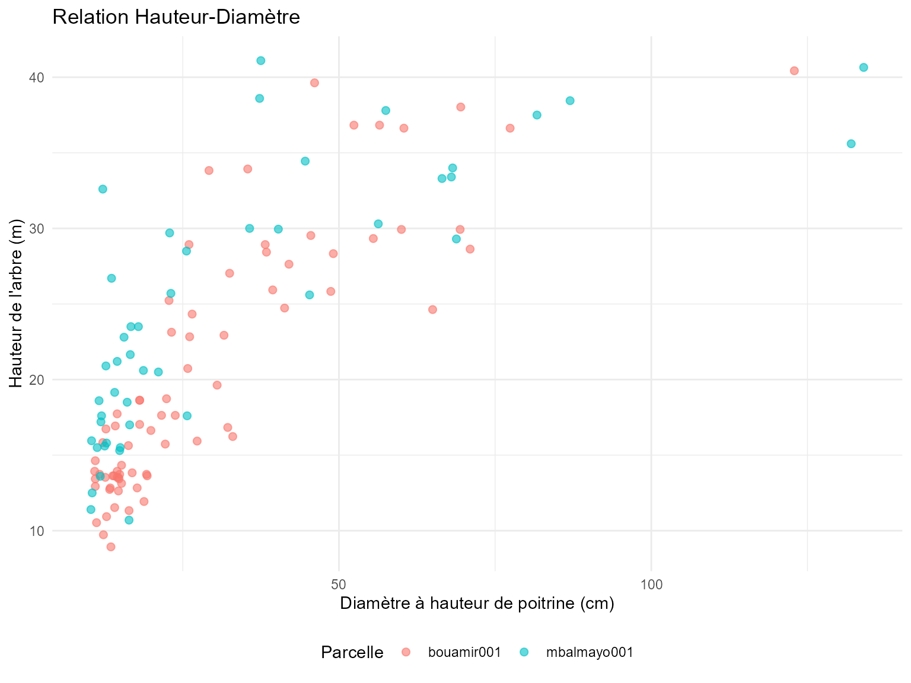

Estimation de la Biomasse Aérienne avec le Package BIOMASS
biomass-agb-estimation-fr.RmdAperçu
Cette vignette montre comment utiliser CafriplotsR avec
le package BIOMASS pour estimer la biomasse aérienne
(AGB) des parcelles forestières permanentes. La fonction
query_plots() avec
output_style = "permanent_plot" fournit des structures de
données optimisées pour les analyses allométriques.
Avantages clés du flux de travail intégré :
- Enrichissement automatique des traits - La densité du bois et autres traits sont pré-intégrés
-
Table hauteur-diamètre prête à l’emploi - Table
$height_diameterfournie par défaut - Sortie structurée - Tables séparées pour les métadonnées, individus et mesures
- Hiérarchies taxonomiques - Héritage des traits de l’espèce → genre → famille
Prérequis
library(CafriplotsR)
library(BIOMASS)
library(dplyr)
library(ggplot2)
# Se connecter aux deux bases avec une seule invite d'identifiants
cons <- connect_cafri()
mydb <- cons$main
mydb_taxa <- cons$taxaÉtape 1 : Extraire les Données de Parcelles
Utilisez output_style = "permanent_plot" pour obtenir
une sortie structurée optimisée pour l’analyse de biomasse :
# Interroger les parcelles permanentes avec les données individuelles
plot_data <- query_plots(
plot_name = c("bouamir001", "mbalmayo001"), # Parcelles exemples
extract_individuals = TRUE, ## extraire les individus/tiges
method = "1ha-IRD",
con = mydb,
census_strategy = "first", ## obtenir le premier recensement (s'il y en a plusieurs) - dans ce cas, parce que les hauteurs d'arbres ont été mesurées lors du premier recensement
## Si wd n'est pas disponible pour l'espèce, la moyenne de wd par genre est attribuée aux espèces appartenant à ce genre
## si wd n'est pas disponible au niveau du genre, la moyenne de la parcelle est donnée
## génère une colonne qui indique la source de l'information
traits_to_genera = T
)
#> ── Building plot filter query ──────────────────────────────────────────────────
#> ℹ Attempt 1 of 10...
#> ✔ ✅ Successfully connected and fetched 2 rows.
#>
#> ── Querying plot features ──
#>
#> ✔ Found 115 feature(s) for 2 plot(s)
#> ℹ Enriching with subplot observation features
#>
#> ── Aggregating features to wide format ──
#>
#> ✔ Query completed
#> ── Processing individuals ──────────────────────────────────────────────────────
#> ℹ Selected first census date column: date_census_1
#> ℹ Fetching individuals
#> ℹ Fetching individuals...
#> ✔ Fetched 888 individual(s)
#> ℹ Loading specimen links...
#> ℹ Loading 92 specimen(s)...
#> ℹ Loading synonyms for 179 taxa...
#> ✔ Loaded 179 synonym record(s)
#> ℹ Assembling individual data...
#> ℹ Enriching with taxonomic backbone...
#> ✔ Successfully fetched 888 individual(s)
#> ✔ Processed 888 individuals
#> ── Processing traits ───────────────────────────────────────────────────────────
#> ℹ Enriching with individual-level traits
#>
#> ── Fetching individual features ──
#>
#> ── Fetching trait measurements ──
#>
#> ℹ Removed 135 measurement(s) with issues
#> ℹ Enriching with census information for first census selection
#> ✔ Selected first census for 2 plot(s)
#> ℹ Filtered out 5345 measurement(s) from other censuses
#> ✔ Query completed: 6878 measurement(s)
#>
#> ── Aggregating features by individual ──
#>
#> ℹ Aggregating 4597 numeric measurement(s)
#> ℹ Aggregating 2281 character measurement(s)
#> ✔ Aggregated 888 individual(s)
#> ℹ Enriching with taxonomic-level traits
#>
#> ── Querying taxa-level traits ──
#>
#> ℹ Fetching trait measurements for 154 taxon/taxa
#> ✔ Found 5064 measurement(s) for 142 taxa
#> ℹ Resolving taxonomic synonyms
#>
#> ── Processing traits to wide format ──
#>
#> ℹ Aggregating numeric traits
#> ℹ Aggregating categorical traits (mode)
#> ✔ Query completed
#> ✔ Added 24 numeric taxonomic trait column(s)
#> ✔ Added 16 categorical taxonomic trait column(s)
#> ℹ Aggregating traits to genus level
#> ℹ Source information added to columns starting with 'source_'
#> ℹ Attempt 1 of 10...
#> ✔ ✅ Successfully connected and fetched 10253 rows.
#> ℹ Attempt 1 of 10...
#> ✔ ✅ Successfully connected and fetched 6091 rows.
#>
#> ── Querying taxa-level traits ──
#>
#> ℹ Fetching trait measurements for 13111 taxon/taxa
#> ✔ Found 19950 measurement(s) for 2492 taxa
#> ℹ Resolving taxonomic synonyms
#> ℹ Including synonyms: 2492 taxa expanded to 6053 taxa
#> ℹ Adding taxonomic information
#> ✔ Query completed
#> ℹ Setting wood density SD to averaged species and genus level according to BIOMASS dataset
#>
#> ── Fetching trait measurements ──
#>
#> ℹ Removed 135 measurement(s) with issues
#> ℹ Enriching with census information
#> ✔ Query completed: 4112 measurement(s)
#>
#> ── Querying taxa-level traits ──
#>
#> ℹ Fetching trait measurements for 154 taxon/taxa
#> ✔ Found 5064 measurement(s) for 142 taxa
#> ℹ Resolving taxonomic synonyms
#> ✔ Query completed
#> ! ids removed - remove_ids = TRUE
#> ℹ Auto-detected output style: 'permanent_plot' based on method field
#> ✔ Output restructured using 'permanent_plot' style. Use names() to see available tables.
# Vérifier la structure
names(plot_data)
#> [1] "metadata" "individuals" "height_diameter" "data_sources"
# $metadata - Informations au niveau de la parcelle
# $individuals - Données d'arbres individuels avec traits
# $height_diameter - Paires hauteur-diamètre (prêtes pour la modélisation)Le style de sortie permanent_plot fournit :
-
$metadata: Coordonnées de parcelle, superficie, dates de recensement, investigateurs -
$individuals: Inventaire complet des arbres avec traits taxonomiques -
$height_diameter: Paires hauteur-diamètre pré-filtrées pour la modélisation allométrique
Étape 2 : Explorer les Données
Données d’Arbres Individuels
La table des individus inclut des traits automatiquement enrichis :
# Vérifier quelles données nous avons
str(plot_data$individuals)
#> tibble [888 × 36] (S3: tbl_df/tbl/data.frame)
#> $ id_n : int [1:888] 248314 248318 248322 248326 248330 248334 248338 248342 248346 248350 ...
#> $ plot_name : chr [1:888] "bouamir001" "bouamir001" "bouamir001" "bouamir001" ...
#> $ tag : num [1:888] 1 2 3 4 5 6 7 8 9 10 ...
#> $ family : chr [1:888] "Annonaceae" "Lecythidaceae" "Olacaceae" "Annonaceae" ...
#> $ genus : chr [1:888] "Xylopia" "Petersianthus" "Heisteria" "Greenwayodendron" ...
#> $ species : chr [1:888] "Xylopia quintasii" "Petersianthus macrocarpus" "Heisteria parvifolia" "Greenwayodendron suaveolens" ...
#> $ dbh : num [1:888] 17.7 62.4 57.7 25.9 22.8 ...
#> $ idtax_individual_f : int [1:888] 6737 626 245 219 1535 344939 828 1757 784 1153 ...
#> $ quadrat : chr [1:888] "0_0" "0_0" "0_0" "0_0" ...
#> $ height : num [1:888] 12.8 NA NA NA NA ...
#> $ census_date : Date[1:888], format: "2018-12-02" "2018-12-02" ...
#> $ number_of_stem : int [1:888] NA NA NA NA NA NA NA NA NA NA ...
#> $ taxa_mean_wood_density : num [1:888] 0.75 0.64 0.74 0.64 0.51 0.56 0.64 0.53 0.8 0.61 ...
#> $ taxa_n_wood_density : num [1:888] 6 96 10 70 12 1 14 36 31 44 ...
#> $ taxa_sd_wood_density : num [1:888] 0.0708 0.0708 0.0708 0.0708 0.0708 ...
#> $ source_taxa_mean_wood_density : chr [1:888] "species" "species" "species" "species" ...
#> $ source_taxa_n_wood_density : chr [1:888] "species" "species" "species" "species" ...
#> $ source_taxa_sd_wood_density : chr [1:888] "species" "species" "species" "species" ...
#> $ taxa_sd_wood_density_plot_level : num [1:888] 0.0762 0.0762 0.0762 0.0762 0.0762 ...
#> $ pom : num [1:888] 1.3 1.3 1.3 1.3 1.3 1.3 1.3 1.8 3.3 1.3 ...
#> $ taxa_mean_stem_diameter_p95 : num [1:888] 35 76.3 50 40 23.5 ...
#> $ taxa_n_stem_diameter_p95 : num [1:888] 1 1 1 1 1 1 1 1 1 1 ...
#> $ taxa_sd_stem_diameter_p95 : num [1:888] 13.9 NA 10.32 13.02 6.36 ...
#> $ source_taxa_mean_stem_diameter_p95: chr [1:888] "species" "species" "species" "species" ...
#> $ source_taxa_n_stem_diameter_p95 : chr [1:888] "species" "species" "species" "species" ...
#> $ source_taxa_sd_stem_diameter_p95 : chr [1:888] "genus" NA "genus" "genus" ...
#> $ observations : chr [1:888] NA "rejets" NA NA ...
#> $ position_x : num [1:888] 3 NA NA NA NA 17.2 NA 13.4 19 NA ...
#> $ position_x_iphone : num [1:888] 2.323 0.801 4.587 10.825 15.836 ...
#> $ position_y : num [1:888] 10 NA NA NA NA 15 NA 6.5 5 NA ...
#> $ position_y_iphone : num [1:888] 10.3 15 19.7 19.9 17.5 ...
#> $ taxa_phenology : chr [1:888] "evergreen" "deciduous" "evergreen" "evergreen" ...
#> $ source_taxa_phenology : chr [1:888] "species" "species" "genus" "species" ...
#> $ taxa_succession_guild : chr [1:888] "non-pioneer light demanding" "non-pioneer light demanding" "shade-tolerant" "shade-tolerant" ...
#> $ source_taxa_succession_guild : chr [1:888] "species" "species" "genus" "species" ...
#> $ stem_status : chr [1:888] "alive" "alive" "alive" "alive" ...
# Colonnes clés pour la biomasse :
# - dbh (stem_diameter) : Diamètre à hauteur de poitrine (cm)
# - species (tax_sp_level) : Nom de l'espèce
# - wood_density_mean (taxa_mean_wood_density) : Densité moyenne du bois (g/cm³)
# - wood_density_sd (taxa_sd_wood_density) : Écart-type pour la propagation d'erreur
# - source_taxa_mean_wood_density (taxa_sd_wood_density) : source d'information pour la densité du bois
# Résumé de la disponibilité de la densité du bois
plot_data$individuals %>%
summarise(
n_total = n(),
n_with_wd = sum(!is.na(taxa_mean_wood_density)),
pct_with_wd = round(100 * n_with_wd / n_total, 1),
mean_wd = mean(taxa_mean_wood_density, na.rm = TRUE)
)
#> # A tibble: 1 × 4
#> n_total n_with_wd pct_with_wd mean_wd
#> <int> <int> <dbl> <dbl>
#> 1 888 888 100 0.639Note : Les traits de densité du bois sont
automatiquement : - Récupérés de la base de données taxonomique -
Hérités de l’espèce → genre → famille quand les données au niveau de
l’espèce ne sont pas disponibles - Moyennés au niveau de la parcelle
quand aucune correspondance taxonomique n’est trouvée (si
traits_to_genera = TRUE)
Données Hauteur-Diamètre
La table $height_diameter est pré-filtrée et
prête pour la modélisation :
# Paires hauteur-diamètre (automatiquement filtrées)
head(plot_data$height_diameter)
#> # A tibble: 6 × 8
#> id_n plot_name tag D H POM census_name census_date
#> <int> <chr> <dbl> <dbl> <dbl> <dbl> <chr> <date>
#> 1 248314 bouamir001 1 17.7 12.8 1.3 census_1 2018-12-02
#> 2 248334 bouamir001 6 22.2 15.7 1.3 census_1 2018-12-02
#> 3 248342 bouamir001 8 38.4 28.4 1.8 census_1 2018-12-02
#> 4 248346 bouamir001 9 123. 40.4 3.3 census_1 2018-12-02
#> 5 248370 bouamir001 15 48.7 25.8 1.3 census_1 2018-12-02
#> 6 248738 bouamir001 107 14.7 13.5 1.3 census_1 2018-12-02
# Cette table inclut :
# - id_n : ID de l'individu
# - plot_name : Identifiant de la parcelle
# - tag : Numéro de l'arbre
# - D : Diamètre (dhp en cm)
# - H : Hauteur (hauteur de l'arbre en m)
# - POM : Point de mesure (si disponible)
# Résumé
plot_data$height_diameter %>%
group_by(plot_name) %>%
summarise(
n_pairs = n(),
mean_dbh = round(mean(D), 1),
mean_height = round(mean(H), 1),
dbh_range = paste(round(min(D), 1), "-", round(max(D), 1)),
height_range = paste(round(min(H), 1), "-", round(max(H), 1))
)
#> # A tibble: 2 × 6
#> plot_name n_pairs mean_dbh mean_height dbh_range height_range
#> <chr> <int> <dbl> <dbl> <chr> <chr>
#> 1 bouamir001 76 28.9 20.4 10.9 - 122.9 8.9 - 40.4
#> 2 mbalmayo001 46 33.2 24.7 10.3 - 134 10.7 - 41.1Étape 3 : Construire les Modèles Hauteur-Diamètre
Utilisez la table $height_diameter pré-filtrée
directement avec BIOMASS :
Option A : Modèle Unique (Toutes Parcelles)
# Ajuster un modèle hauteur-diamètre global
hd_model_global <- BIOMASS::modelHD(
D = plot_data$height_diameter$D,
H = plot_data$height_diameter$H,
method = "weibull",
useWeight = TRUE
)
# Vérifier l'ajustement du modèle
summary(hd_model_global)
#> Length Class Mode
#> input 2 -none- list
#> model 6 nls list
#> residuals 122 -none- numeric
#> method 1 -none- character
#> predicted 122 -none- numeric
#> RSE 1 -none- numeric
#> weighted 1 -none- logical
# Erreur standard résiduelle pour la propagation d'incertitude
RSE_global <- hd_model_global$RSE
print(paste("RSE :", round(RSE_global, 3)))
#> [1] "RSE : 5.029"Option B : Modèles Spécifiques par Parcelle
Pour les parcelles avec suffisamment de mesures de hauteur (>15 paires recommandées) :
# Construire des modèles séparés par parcelle
hd_models_by_plot <- plot_data$height_diameter %>%
group_by(plot_name) %>%
filter(n() >= 15) %>% # Exiger au moins 15 paires H-D
group_split() %>%
lapply(function(plot_df) {
tryCatch({
model <- BIOMASS::modelHD(
D = plot_df$D,
H = plot_df$H,
method = "weibull",
useWeight = TRUE
)
list(
plot_name = unique(plot_df$plot_name),
model = model,
RSE = model$RSE,
n = nrow(plot_df)
)
}, error = function(e) {
NULL # Retourner NULL si le modèle échoue
})
}) %>%
Filter(Negate(is.null), .) # Supprimer les modèles échoués
# Résumé
cat(sprintf("Construit %d modèles spécifiques par parcelle\n", length(hd_models_by_plot)))
#> Construit 2 modèles spécifiques par parcelleVisualiser les Relations H-D
# Tracer les données hauteur-diamètre avec la courbe ajustée
ggplot(plot_data$height_diameter, aes(x = D, y = H)) +
geom_point(aes(color = plot_name), alpha = 0.6, size = 2) +
geom_smooth(method = "nls",
formula = y ~ a * (1 - exp(-b * x^c)),
method.args = list(start = list(a = 40, b = 0.05, c = 1)),
se = TRUE, color = "black", linewidth = 1.5) +
labs(
title = "Relation Hauteur-Diamètre",
x = "Diamètre à hauteur de poitrine (cm)",
y = "Hauteur de l'arbre (m)",
color = "Parcelle"
) +
theme_minimal() +
theme(legend.position = "bottom")
#> Warning: Failed to fit group -1.
#> Caused by error in `pred$fit`:
#> ! $ operator is invalid for atomic vectors
Étape 4 : Prédire les Hauteurs Manquantes
La plupart des arbres n’ont pas de mesures de hauteur. Utilisez le modèle H-D pour les prédire :
# Préparer les données pour l'estimation AGB
agb_data <- plot_data$individuals %>%
filter(!is.na(dbh)) %>% # Doit avoir un diamètre
mutate(
# Prédire la hauteur en utilisant le modèle global (ou spécifique à la parcelle si disponible)
H_predicted = BIOMASS::retrieveH(
D = dbh,
model = hd_model_global
)$H,
# Utiliser la hauteur mesurée si disponible, sinon prédite
H_final = ifelse(!is.na(height), height, H_predicted),
# Assigner RSE pour l'incertitude
H_RSE = RSE_global
)
# Vérifier le succès de la prédiction
agb_data %>%
summarise(
n_total = n(),
n_measured = sum(!is.na(height)),
n_predicted = sum(is.na(height)),
pct_predicted = round(100 * n_predicted / n_total, 1)
)
#> # A tibble: 1 × 4
#> n_total n_measured n_predicted pct_predicted
#> <int> <int> <int> <dbl>
#> 1 834 122 712 85.4Utiliser des modèles spécifiques par parcelle (si disponibles) :
# Créer une table de correspondance pour le RSE spécifique par parcelle
plot_rse <- data.frame(
plot_name = sapply(hd_models_by_plot, function(x) x$plot_name),
RSE_plot = sapply(hd_models_by_plot, function(x) x$RSE)
)
# Prédire avec des modèles spécifiques par parcelle où disponibles
agb_data <- agb_data %>%
filter(!is.na(dbh)) %>%
left_join(plot_rse, by = "plot_name") %>%
mutate(
# Utiliser le RSE spécifique par parcelle si disponible, sinon global
H_RSE = ifelse(!is.na(RSE_plot), RSE_plot, RSE_global),
# Prédire les hauteurs (nécessiterait de boucler sur les modèles spécifiques par parcelle)
H_final = ifelse(!is.na(height), height, H_predicted)
)Étape 5 : Estimer la Biomasse Aérienne
Nous avons maintenant toutes les entrées requises pour BIOMASS :
- D : Diamètre (dhp)
- WD : Densité du bois (automatiquement depuis la base de données !)
- H : Hauteur (mesurée ou prédite)
- Erreurs : Écart-type pour la densité du bois, RSE pour la hauteur
Vérifier la Complétude des Données
# Résumé des variables requises
summary(agb_data[, c("dbh", "taxa_mean_wood_density", "H_final", "H_RSE")])
#> dbh taxa_mean_wood_density H_final H_RSE
#> Min. : 10.0 Min. :0.290 Min. : 8.93 Min. :4.280
#> 1st Qu.: 12.3 1st Qu.:0.590 1st Qu.:16.39 1st Qu.:4.280
#> Median : 16.2 Median :0.650 Median :19.07 Median :5.299
#> Mean : 23.3 Mean :0.639 Mean :20.97 Mean :4.824
#> 3rd Qu.: 24.8 3rd Qu.:0.710 3rd Qu.:23.86 3rd Qu.:5.299
#> Max. :175.0 Max. :0.870 Max. :41.10 Max. :5.299
# Vérifier les données manquantes
agb_data %>%
summarise(
missing_dbh = sum(is.na(dbh)),
missing_wd = sum(is.na(taxa_mean_wood_density)),
missing_height = sum(is.na(H_final)),
complete_cases = sum(!is.na(dbh) & !is.na(taxa_mean_wood_density) & !is.na(H_final))
)
#> # A tibble: 1 × 4
#> missing_dbh missing_wd missing_height complete_cases
#> <int> <int> <int> <int>
#> 1 0 0 0 834Estimation Simple d’AGB (Sans Propagation d’Erreur)
Estimation rapide sans incertitude :
# Calcul simple d'AGB en utilisant l'équation de Chave et al. 2014
agb_data <- agb_data %>%
filter(!is.na(dbh) & !is.na(taxa_mean_wood_density) & !is.na(H_final)) %>%
mutate(
AGB_kg = BIOMASS::computeAGB(
D = dbh,
WD = taxa_mean_wood_density,
H = H_final
)
)
# AGB au niveau de la parcelle
agb_by_plot <- agb_data %>%
group_by(plot_name) %>%
summarise(
n_trees = n(),
total_AGB_Mg = sum(AGB_kg)
)
print(agb_by_plot)
#> # A tibble: 2 × 3
#> plot_name n_trees total_AGB_Mg
#> <chr> <int> <dbl>
#> 1 bouamir001 389 334.
#> 2 mbalmayo001 445 445.Résumé
Cette vignette a démontré le flux de travail complet pour
l’estimation d’AGB en utilisant CafriplotsR et
BIOMASS :
- ✅ Extraire des données structurées avec
output_style = "permanent_plot" - ✅ Utiliser les données H-D pré-filtrées de la
table
$height_diameter - ✅ Construire des modèles allométriques avec BIOMASS::modelHD()
- ✅ Exploiter les traits intégrés - densité du bois automatiquement incluse
Avantages clés :
- Pas de correspondance manuelle des traits - densité du bois pré-intégrée depuis la base de données taxonomique
- Table H-D prête à l’emploi - filtrée et formatée pour BIOMASS
Ressources Supplémentaires
- Package BIOMASS : Réjou-Méchain et al. (2017) https://CRAN.R-project.org/package=BIOMASS
- Équations allométriques : Chave et al. (2014) https://doi.org/10.1111/gcb.12629
-
Requêtes CafriplotsR : Voir
vignette("using-query-plots-fr") -
Correspondance taxonomique : Voir
vignette("taxonomic-app-fr")
Références
Chave, J., et al. (2014). Improved allometric models to estimate the aboveground biomass of tropical trees. Global Change Biology, 20(10), 3177-3190.
Réjou-Méchain, M., et al. (2017). biomass: an R package for estimating above-ground biomass and its uncertainty in tropical forests. Methods in Ecology and Evolution, 8(9), 1163-1167.